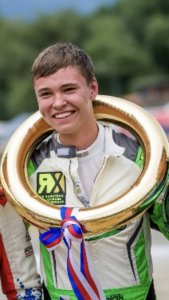
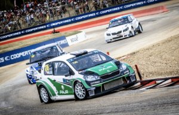
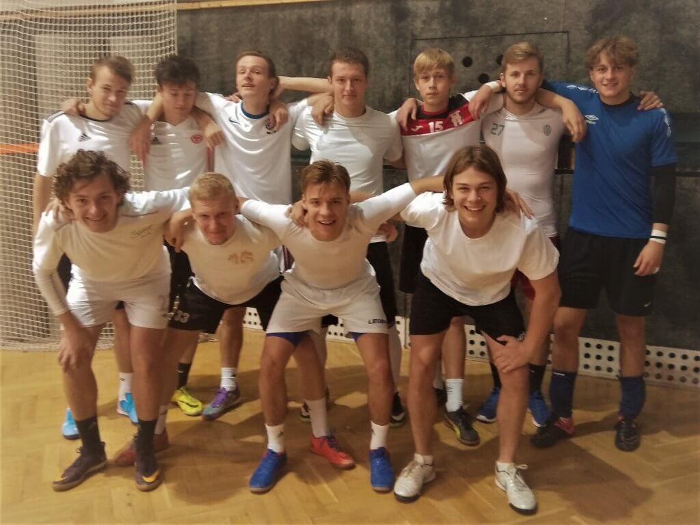

Sportovní akce a soutěže
Úspěch v rallycrosu
18.12. 2019 Věra SvárovskáTomáš Krejčík, student třetího ročníku, je člen ACCR Czech Talent Teamu a jezdec týmu Pajr Motorsport. V uplynulé sezóně získal tituly mistra na Mistrovství České republiky a v mistrovství Zóny střední Evropy v rallycrosu. Jezdí vozem Škoda Citigo v kategorii Super 1600. Srdečně blahopřejeme a přejeme mnoho dalších sportovních úspěchů.

Čutálisti SPŠ na třetím místě na okresním kole futsalu
9.12. 2019 Ladislav Schejbal Třetí místo tým SPŠ obsadil na okresním kole futsalu v Městské sportovní hale ve složení: Mašek Michal ( 3.B ), Hrynčuk Stanislav, Chleborád Erik, Zemen Jiří, Pešta Alexandr a Kadlec Viktor ( 3.E ), Novák Matyáš, Gracl David a Chládek Filip ( 3.C ), Kuhmel Patrik ( 2.D ) a Šíma Adam ( 2.D ).
Ve dvou tříčlenných skupinách probíhal turnaj v poklidném vánočním duchu ( nepostupová soutěž ). Bohužel většina našich fotbalistů tomu podlehla až tak, že nepodali své nejlepší výkony. Zejména v závěru prvního utkání a v rozhodujícím druhém utkání.
V tom prvním se SOU Škoda po spoustě promarněných šancí zachraňoval situaci pěknými zákroky Adam Šíma a utkání rozhodl dvěma krásnými ranami Patrik Kuhmel. V posledních chvílích si však nechali dát gól, který v konečném hodnocení skupiny byl rozhodující. Ve druhém utkání s GJP stačila remíza na postup do finále, ale opět nedostatečné rozcvičení a bohorovnost některých hráčů způsobila spoustu promarněných šancí a jeden gól v naší síti. A myslet si, že perfektních pět minut na závěr zachrání situaci byl omyl. Výsledkem bylo druhé místo ve skupině a utkání o třetí místo s ISŠZT Jičínská. To bylo od začátku jednoznačné a výsledkem 9:0 ( góly Mašek 3*, Zemen 2*, Chleborád, Hrynčuk, Kuhmel a Horák ) vybojovali naši žáci třetí místo.
Nejlepší výkony z našich hráčů podali v brance Adam Šíma, v poli Michal Mašek a Patrik Kuhmel.
Děkujeme za reprezentaci a snad někdy naši fotbalisté předvedou opravdu to, na co mají.
Jakub Zejbrdlich zvítězil na krajském kole v přespolním běhu, družstvo SPŠ čtvrté
11.10. 2019 Ladislav SchejbalNa čtvrtém místě v krajském kole přespolního běhu v Kutné Hoře se umístili naši běžci. Ve finiši nejlepší dvojice dokázal zvítězit a porazit tím všechny své soupeře Jakub Zejbrdlich ( 3.E ). Bohužel ostatní členové družstva: Michal Mašek, Tadeáš Lang, Ondřej Hofreiter – všichni 3.B a Jakub Špringl – 4.A , i když předvedli výkony na hranici svých současných možností, jeho výkon dostatečně nepodpořili a obsadili místa ve druhé a třetí desítce ze 35 startujících, což na lepší umístění týmu nestačilo.Děkujeme všem za reprezentaci školy.
Jsme na Facebooku
SPŠ Mladá BoleslavStáž v zahraničí
V rámci vzdělávacího programu Erasmus+ absolvují vybraní studenti zahraniční stáž v Anglii nebo v Irsku. Stáži předchází přípravné hodiny angličtiny. Třítýdenní pobyt je plně hrazen z prostředků projektu.
Více o ErasmuZřizovatel školy
Střední průmyslová škola, Mladá Boleslav, Havlíčkova 456 je příspěvková organizace zřizovaná Středočeským krajem.